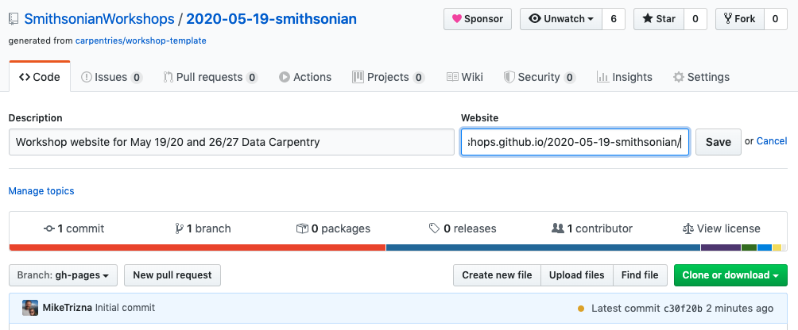

Creating a Workshop Website¶
Creating a Repository from the Carpentries Template¶
Log into GitHub, and go to https://github.com/carpentries/workshop-template#creating-a-repository. Follow the steps under “Creating a Repository” so that your screen looks like this (with different Name). Fill in “Workshop website for {dates} {workshop type}” for the Description. Contact Mike Trizna if you do not have access to the “SmithsonianWorkshops” organization.

Test out the URL (of form https://smithsonianworkshops.github.io/[repo name]), and add it to the Repo description. 
Updating workshop-specific info¶
Fill in workshop details in
_config.ymlandindex.mdModify workshop-specific resources in
_includes/intro.html:who.html:setup.html:syllabus.html:schedule.html:
Optional: Making an empty Main Branch¶
By default, when a user goes to the GitHub repository for the workshop, they will be confused by seeing confusing instructions about building a website. We can move all of these supporting files away from view, and have a fresh space to store workshop-related files such as Jupyter/R Notebooks, EtherPad exports, etc.